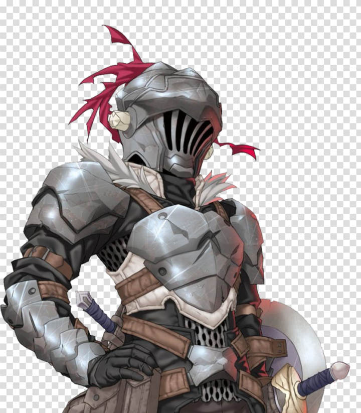
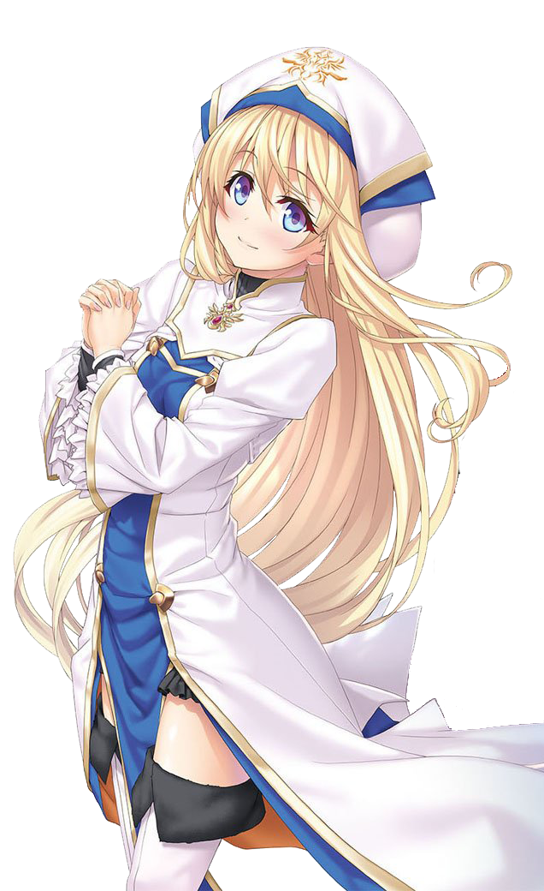
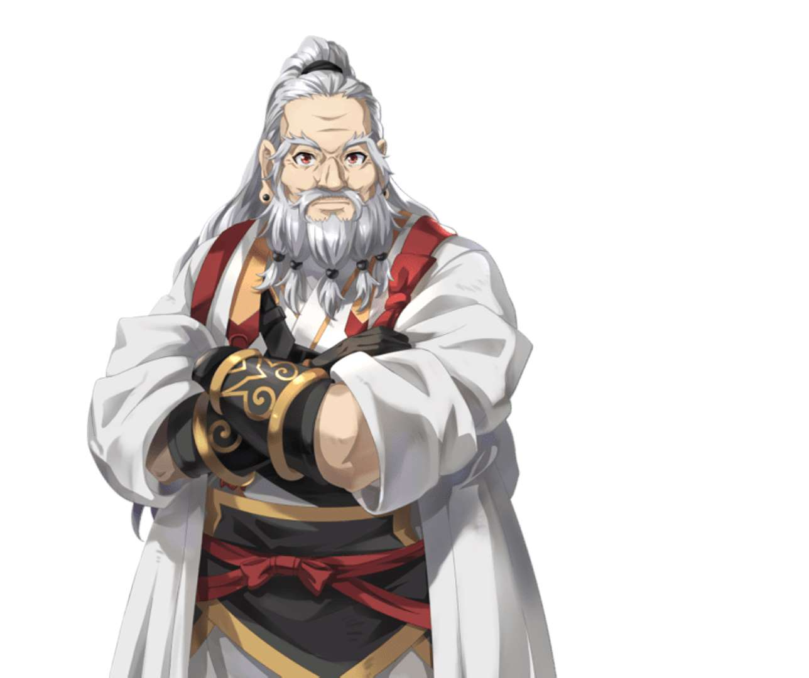
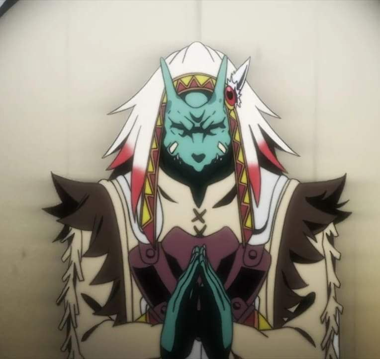

En un mundo de fantasía, los aventureros de todas partes se unen al Gremio, a fin de completar contratos de cualquier trabajo disponible que incluya la caza de diversos tipos de monstruos que vagan por la tierra u otro tipo de misión que sea ofrecida. Una sacerdotisa inexperta se une a un grupo de novatos para su primera aventura, que es destruir un nido de goblins. Sin embargo, la falta de experiencia y exceso de confianza de los integrantes les juega una mala pasada y el resto de su grupo es eliminado. Sorpresivamente, ella es salvada por un hombre conocido como Goblin Slayer, un aventurero cuyo único propósito es la erradicación de los goblins con una dedicación extrema.
lista de los capítulos de la primer temporada:
| Personaje | foto | rol |
|---|---|---|
| goblin slayer |  | protagonista |
| sacerdotisa |  | protagonista |
| elfa arquera | |
personaje secundario de apoyo |
| enano |  | personaje secundario de apoyo |
| lagarto |  | personaje secundario de apoyo |